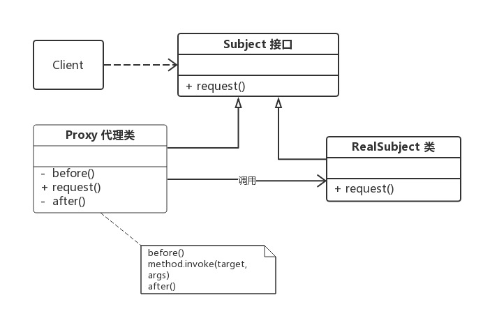
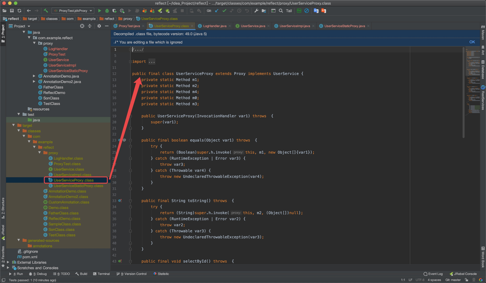
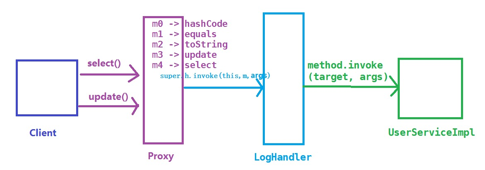

动态代理在 Java 中有着广泛的应用，比如 Spring AOP、Hibernate 数据查询、测试框架的后端 mock、RPC 远程调用、Java 注解对象获取、日志、用户鉴权、全局性异常处理、性能监控，甚至事务处理等。
代理模式
代理模式：给某一个对象提供一个代理，并由代理对象来控制对真实对象的访问。代理模式是一种结构型设计模式。
代理模式角色
Subject（抽象主题角色） ：定义代理类和真实主题的公共对外方法，也是代理类代理真实主题的方法。
RealSubject（真实主题角色） ：真正实现业务逻辑的类。
Proxy（代理主题角色） ：用来代理和封装真实主题。
代理模式的结构比较简单，其核心是代理类，为了让客户端能够一致性地对待 真实对象和代理对象，在代理模式中引入了抽象层。

代理模式按照职责 （使用场景）来分类，至少可以分为以下几类：
远程代理
虚拟代理
Copy-on-Write 代理
保护（Protect or Access）代理
Cache代理
防火墙（Firewall）代理
同步化（Synchronization）代理
智能引用（Smart Reference）代理
…
如果根据字节码的创建时机 来分类，可以分为静态代理和动态代理：
所谓静态 也就是在程序运行前 就已经存在代理类的字节码文件 ，代理类和真实主题角色的关系在运行前就确定了。
而动态代理的源码是在程序运行期间由 JVM 根据反射等机制动态的生成 ，所以在运行前并不存在代理类的字节码文件。
静态代理
我们先通过实例来学习静态代理，然后理解静态代理的缺点，再来学习本文的主角：动态代理 。
编写一个接口 UserService ，以及该接口的一个实现类 UserServiceImpl：
1 2 3 4 5 6 7 8 * @author vincent */ public interface UserService void selectById () void update () }
1 2 3 4 5 6 7 8 9 10 11 12 13 14 * @author vincent */ public class UserServiceImpl implements UserService @Override public void selectById () System.out.println("查询 selectById" ); } @Override public void update () System.out.println("更新 update" ); } }
我们将通过静态代理对 UserServiceImpl 进行功能增强，在调用 select 和 update 之前记录一些日志。写一个代理类 UserServiceProxy，代理类需要实现 UserService：
1 2 3 4 5 6 7 8 9 10 11 12 13 14 15 16 17 18 19 20 21 22 23 24 25 26 27 28 29 30 31 32 33 34 35 * @author vincent */ public class UserServiceStaticProxy private UserService target; public UserServiceStaticProxy (UserService target) this .target = target; } public void selectById () before(); target.selectById(); after(); } public void update () before(); target.update(); after(); } private void before () System.out.println(String.format("log start time [%s] " , new SimpleDateFormat("yyyy-MM-dd HH:mm:ss:SSS" ).format(new Date()))); } private void after () System.out.println(String.format("log end time [%s] " , new SimpleDateFormat("yyyy-MM-dd HH:mm:ss:SSS" ).format(new Date()))); } }
测试类：
1 2 3 4 5 6 7 8 9 10 11 12 * @author vincent */ public class ProxyTest @Test public void staticTest () UserServiceImpl userServiceImpl = new UserServiceImpl(); UserServiceStaticProxy proxy = new UserServiceStaticProxy(userServiceImpl); proxy.selectById(); proxy.update(); } }
运行结果：
1 2 3 4 5 6 log start time [2020 -04 -10 22 :10 :24 :193 ] 查询 selectById log end time [2020 -04 -10 22 :10 :24 :194 ] log start time [2020 -04 -10 22 :10 :24 :194 ] 更新 update log end time [2020 -04 -10 22 :10 :24 :194 ]
通过静态代理，我们达到了功能增强的目的，而且没有侵入原代码，这是静态代理的一个优点。
静态代理的缺点
虽然静态代理实现简单，且不侵入原代码。但是，当场景稍微复杂一些的时候，静态代理的缺点也会暴露出来。
如何改进，当然是让代理类动态的生成 啦，也就是动态代理。
动态代理
最常见的方式：
通过实现接口的方式：JDK 动态代理
通过继承类的方式：CGLIB 动态代理
JDK 动态代理JDK 动态代理主要涉及两个类：java.lang.reflect.Proxy 和 java.lang.reflect.InvocationHandler，我们仍然通过案例来学习编写一个调用逻辑处理器 LogHandler 类，提供日志增强功能，并实现 InvocationHandler 接口；在 LogHandler 中维护一个目标对象，这个对象是被代理的对象（真实主题角色）；在 invoke 方法中编写方法调用的逻辑处理：
1 2 3 4 5 6 7 8 9 10 11 12 13 14 15 16 17 18 19 20 21 22 23 24 25 26 27 28 29 * @author vincent */ public class LogHandler implements InvocationHandler Object target; public LogHandler (Object target) this .target = target; } @Override public Object invoke (Object proxy, Method method, Object[] args) throws Throwable before(); Object invoke = method.invoke(target, args); after(); return invoke; } private void before () System.out.println(String.format("log start time [%s] " , new SimpleDateFormat("yyyy-MM-dd HH:mm:ss:SSS" ).format(new Date()))); } private void after () System.out.println(String.format("log end time [%s] " , new SimpleDateFormat("yyyy-MM-dd HH:mm:ss:SSS" ).format(new Date()))); } }
编写客户端，获取动态生成的代理类的对象须借助 Proxy 类的 newProxyInstance 方法，具体步骤可见代码和注释：
1 2 3 4 5 6 7 8 9 10 11 12 13 14 15 16 17 18 19 20 21 22 23 24 25 26 * @author vincent */ public class ProxyTest { @Test public void jdkProxy() { UserServiceImpl userServiceImpl = new UserServiceImpl() ; ClassLoader classLoader = userServiceImpl.getClass() .getClassLoader() ; Class<?>[] interfaces = userServiceImpl.getClass() .getInterfaces() ; LogHandler logHandler = new LogHandler(userServiceImpl ) ; UserService proxy = (UserService) Proxy .new ProxyInstance(classLoader , interfaces , logHandler ) ; proxy.selectById() ; proxy.update() ; generateClassFile(userServiceImpl .getClass () , "UserServiceProxy" ); } }
运行结果：
1 2 3 4 5 6 log start time [2020 -04 -11 21 :39 :12 :529 ] 查询 selectById log end time [2020 -04 -11 21 :39 :12 :530 ] log start time [2020 -04 -11 21 :39 :12 :530 ] 更新 update log end time [2020 -04 -11 21 :39 :12 :530 ]
InvocationHandler 和 Proxy 的主要方法介绍如下：
java.lang.reflect.InvocationHandler
Object invoke(Object proxy, Method method, Object[] args)：定义了代理对象调用方法时希望执行的动作，用于集中处理在动态代理类对象上的方法调用。
java.lang.reflect.Proxy
static InvocationHandler getInvocationHandler(Object proxy)：用于获取指定代理对象所关联的调用处理器。static Class<?> getProxyClass(ClassLoader loader, Class<?>... interfaces)：返回指定接口的代理类。static Object newProxyInstance(ClassLoader loader, Class<?>[] interfaces, InvocationHandler h)：构造实现指定接口的代理类的一个新实例，所有方法会调用给定处理器对象的 invoke 方法。static boolean isProxyClass(Class<?> cl) 返回 cl 是否为一个代理类。
代理类的调用过程
生成的代理类到底长什么样子呢，借助下面的方法，把代理类保存下来再探个究竟（通过设置环境变量sun.misc.ProxyGenerator.saveGeneratedFiles=true也可以保存代理类）。
1 2 3 4 5 6 7 8 9 10 11 12 13 14 15 16 17 18 19 20 21 22 23 24 25 26 * 将根据类信息动态生成的二进制字节码保存到硬盘中，默认的是 clazz 目录下 * params: clazz 需要生成动态代理类的类 * proxyName: 为动态生成的代理类的名称 */ public static void generateClassFile (Class clazz, String proxyName) byte [] classFile = ProxyGenerator.generateProxyClass(proxyName, clazz.getInterfaces()); String paths = clazz.getResource("." ).getPath(); System.out.println(paths); FileOutputStream out = null ; try { out = new FileOutputStream(paths + proxyName + ".class" ); out.write(classFile); out.flush(); } catch (Exception e) { e.printStackTrace(); } finally { try { out.close(); } catch (IOException e) { e.printStackTrace(); } } }
IDEA 再次运行之后就可以在 target 的类路径下找到 UserServiceProxy.class，双击后 IDEA 的反编译插件会将该二进制 class 文件。

UserServiceProxy 的代码如下所示：
1 2 3 4 5 6 7 8 9 10 11 12 13 14 15 16 17 18 19 20 21 22 23 24 25 26 27 28 29 30 31 32 33 34 35 36 37 38 39 40 41 42 43 44 45 46 47 48 49 50 51 52 53 54 55 56 57 58 59 60 61 62 63 64 65 66 67 68 69 70 71 72 73 74 75 76 77 78 79 80 81 82 83 84 85 86 import com.example.reflect.proxy.UserService;import java.lang.reflect.InvocationHandler;import java.lang.reflect.Method;import java.lang.reflect.Proxy;import java.lang.reflect.UndeclaredThrowableException;public final class UserServiceProxy extends Proxy implements UserService private static Method m1; private static Method m2; private static Method m4; private static Method m0; private static Method m3; public UserServiceProxy (InvocationHandler var1) throws super (var1); } public final boolean equals (Object var1) throws try { return (Boolean)super .h.invoke(this , m1, new Object[]{var1}); } catch (RuntimeException | Error var3) { throw var3; } catch (Throwable var4) { throw new UndeclaredThrowableException(var4); } } public final String toString () throws try { return (String)super .h.invoke(this , m2, (Object[])null ); } catch (RuntimeException | Error var2) { throw var2; } catch (Throwable var3) { throw new UndeclaredThrowableException(var3); } } public final void selectById () throws try { super .h.invoke(this , m4, (Object[])null ); } catch (RuntimeException | Error var2) { throw var2; } catch (Throwable var3) { throw new UndeclaredThrowableException(var3); } } public final int hashCode () throws try { return (Integer)super .h.invoke(this , m0, (Object[])null ); } catch (RuntimeException | Error var2) { throw var2; } catch (Throwable var3) { throw new UndeclaredThrowableException(var3); } } public final void update () throws try { super .h.invoke(this , m3, (Object[])null ); } catch (RuntimeException | Error var2) { throw var2; } catch (Throwable var3) { throw new UndeclaredThrowableException(var3); } } static { try { m1 = Class.forName("java.lang.Object" ).getMethod("equals" , Class.forName("java.lang.Object" )); m2 = Class.forName("java.lang.Object" ).getMethod("toString" ); m4 = Class.forName("com.example.reflect.proxy.UserService" ).getMethod("selectById" ); m0 = Class.forName("java.lang.Object" ).getMethod("hashCode" ); m3 = Class.forName("com.example.reflect.proxy.UserService" ).getMethod("update" ); } catch (NoSuchMethodException var2) { throw new NoSuchMethodError(var2.getMessage()); } catch (ClassNotFoundException var3) { throw new NoClassDefFoundError(var3.getMessage()); } } }
从 UserServiceProxy 的代码中我们可以发现：
UserServiceProxy 继承了 Proxy 类，并且实现了被代理的所有接口，以及 equals、hashCode、toString 等方法。
由于 UserServiceProxy 继承了 Proxy 类，所以每个代理类都会关联一个 InvocationHandler 方法调用处理器。
类和所有方法都被 public final 修饰，所以代理类只可被使用，不可以再被继承。
每个方法都有一个 Method 对象来描述，Method 对象在static静态代码块中创建，以 m + 数字 的格式命名。
调用方法的时候通过 super.h.invoke(this, m1, (Object[])null); 调用，其中的 super.h.invoke 实际上是在创建代理的时候传递给 Proxy.newProxyInstance 的 LogHandler 对象，它继承 InvocationHandler 类，负责实际的调用处理逻辑。
而 LogHandler 的 invoke 方法接收到 method、args 等参数后，进行一些处理，然后通过反射让被代理的对象 target 执行方法。
1 2 3 4 5 6 7 @Override public Object invoke (Object proxy, Method method, Object[] args) throws Throwable before(); Object result = method.invoke(target, args); after(); return result; }
JDK 动态代理执行方法调用的过程简图如下：

代理类的调用过程相信大家都明了了，而关于 Proxy 的源码解析，还请大家另外查阅其他文章或者直接看源码。
CGLIB 动态代理maven 引入 CGLIB 包，然后编写一个 UserDao 类，它没有接口，只有两个方法，select() 和 update()：
1 2 3 4 5 6 7 8 public class UserDao public void select () System.out.println("UserDao 查询 selectById" ); } public void update () System.out.println("UserDao 更新 update" ); } }
编写一个 LogInterceptor ，继承了 MethodInterceptor，用于方法的拦截回调：
1 2 3 4 5 6 7 8 9 10 11 12 13 14 15 16 17 18 19 20 21 22 23 24 25 26 import java.lang.reflect.Method;import java.util.Date;public class LogInterceptor implements MethodInterceptor * @param object 表示要进行增强的对象 * @param method 表示拦截的方法 * @param objects 数组表示参数列表，基本数据类型需要传入其包装类型，如int -->Integer、long -Long、double -->Double * @param methodProxy 表示对方法的代理，invokeSuper方法表示对被代理对象方法的调用 * @return 执行结果 * @throws Throwable */ @Override public Object intercept (Object object, Method method, Object[] objects, MethodProxy methodProxy) throws Throwable before(); Object result = methodProxy.invokeSuper(object, objects); after(); return result; } private void before () System.out.println(String.format("log start time [%s] " , new Date())); } private void after () System.out.println(String.format("log end time [%s] " , new Date())); } }
测试类：
1 2 3 4 5 6 7 8 9 10 11 12 13 14 import net.sf.cglib.proxy.Enhancer;public class CglibTest public static void main (String[] args) DaoProxy daoProxy = new DaoProxy(); Enhancer enhancer = new Enhancer(); enhancer.setSuperclass(Dao.class); enhancer.setCallback(daoProxy); Dao dao = (Dao)enhancer.create(); dao.update(); dao.select(); } }
运行结果：
1 2 3 4 5 6 log start time [Fri Dec 21 00 :06 :40 CST 2018 ] UserDao 查询 selectById log end time [Fri Dec 21 00 :06 :40 CST 2018 ] log start time [Fri Dec 21 00 :06 :40 CST 2018 ] UserDao 更新 update log end time [Fri Dec 21 00 :06 :40 CST 2018 ]
还可以进一步多个 MethodInterceptor 进行过滤筛选：
1 2 3 4 5 6 7 8 9 10 11 12 13 14 15 16 17 18 19 20 21 22 23 24 25 26 public class LogInterceptor2 implements MethodInterceptor @Override public Object intercept (Object object, Method method, Object[] objects, MethodProxy methodProxy) throws Throwable before(); Object result = methodProxy.invokeSuper(object, objects); after(); return result; } private void before () System.out.println(String.format("log2 start time [%s] " , new Date())); } private void after () System.out.println(String.format("log2 end time [%s] " , new Date())); } } public class DaoFilter implements CallbackFilter @Override public int accept (Method method) if ("select" .equals(method.getName())) { return 0 ; } return 1 ; } }
再次测试类：
1 2 3 4 5 6 7 8 9 10 11 12 13 14 public class CglibTest2 public static void main (String[] args) LogInterceptor logInterceptor = new LogInterceptor(); LogInterceptor2 logInterceptor2 = new LogInterceptor2(); Enhancer enhancer = new Enhancer(); enhancer.setSuperclass(UserDao.class); enhancer.setCallbacks(new Callback[]{logInterceptor, logInterceptor2, NoOp.INSTANCE}); enhancer.setCallbackFilter(new DaoFilter()); UserDao proxy = (UserDao) enhancer.create(); proxy.select(); proxy.update(); } }
运行结果：
1 2 3 4 5 6 log start time [Fri Dec 21 00 :22 :39 CST 2018 ] UserDao 查询 selectById log end time [Fri Dec 21 00 :22 :39 CST 2018 ] log2 start time [Fri Dec 21 00 :22 :39 CST 2018 ] UserDao 更新 update log2 end time [Fri Dec 21 00 :22 :39 CST 2018 ]
CGLIB 创建动态代理类的模式是：
查找目标类上的所有非final 的public类型的方法定义。
将这些方法的定义转换成字节码。
将组成的字节码转换成相应的代理的class对象。
实现 MethodInterceptor接口，用来处理对代理类上所有方法的请求。
JDK 动态代理与 CGLIB 动态代理对比JDK 动态代理：基于 Java 反射机制实现，必须要实现了接口的业务类才能用这种办法生成代理对象。
cglib 动态代理：基于 ASM 机制实现，通过生成业务类的子类作为代理类。
JDK Proxy 的优势：
最小化依赖关系，减少依赖意味着简化开发和维护，JDK 本身的支持，可能比 cglib 更加可靠。
平滑进行 JDK 版本升级，而字节码类库通常需要进行更新以保证在新版 Java 上能够使用。
代码实现简单。
基于类似 cglib 框架的优势：
无需实现接口，达到代理类无侵入。
只操作我们关心的类，而不必为其他相关类增加工作量。
高性能。
案例源码：https://github.com/V-Vincen/reflect
If you like this blog or find it useful for you, you are welcome to comment on it. You are also welcome to share this blog, so that more people can participate in it. If the images used in the blog infringe your copyright, please contact the author to delete them. Thank you !